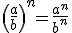
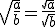

Potencias y raíces
Resumen
Una potencia es el producto de factores iguales .
La base es el factor repetido y el exponente es el número de veces que se repite.
Cuando el exponente es dos decimos “al cuadrado”, cuando es tres decimos “al cubo”, cuando es cuatro “a la cuarta”, …
Para multiplicar por 10 añadimos un cero.
Para calcular una potencia de base 10 escribimos un 1 y tantos ceros como el exponente.
La descomposición en la cual cada orden de unidades está representado por una potencia en base 10 se llama descomposición polinómica .
Una potencia de un número entero positivo es siempre un número entero positivo.
La potencia de un número entero negativo es un número entero positivo si el exponente es par o negativo si es impar.
- Potencia de un producto: (a · b)n = an · bn
- Potencia de un cociente: (a : b)n = an : bn
- Producto de potencias con la misma base: an · am = an+m
- Cociente de potencias con la misma base: an : am = an-m
- Potencia de una potencia: (am)n = am·n
- NOTA: a0 = 1 a1 = a
La notación científica es una forma de escribir números muy grandes (y muy pequeños) usando un número entre 1 y 10 multiplicado por una potencia de 10: a · 10b , donde “a” se llama mantisa y “b” exponente u orden de magnitud.
√a = b si b2 = a
Llamamos a a radicando y a b raíz cuadrada.
Nota. Debes memorizar los siguientes cuadrados:
12=1 22=4 32=9 42=16 52=25
62=36 72=49 82=64 92=81 102=100
112=121 122=144 132=169 142=196 152=225
202=400 252=625 302=900
(n+1)2= n2+ n + (n + 1)
Los números que tienen una raíz cuadrada exacta se llaman cuadrados perfectos. Si el número no es un cuadrado perfecto, debemos buscar su raíz cuadrada entera, es el mayor cuadrado perfecto menor que el número.
Un número entero puede tener:
- Dos raíces cuadradas (que sean números enteros).
- Dos raíces cuadradas (que no sean números enteros).- Una raíz cuadrada.
- Ninguna raíz cuadrada.
- Potencia de una fracción:

- Raíz cuadrada de una fracción:

Obra publicada con Licencia Creative Commons Reconocimiento No comercial Compartir igual 3.0